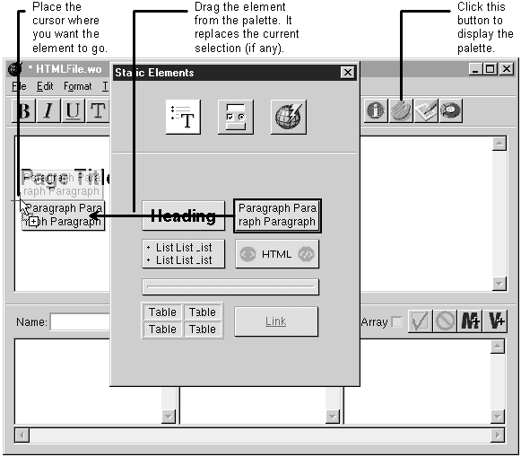
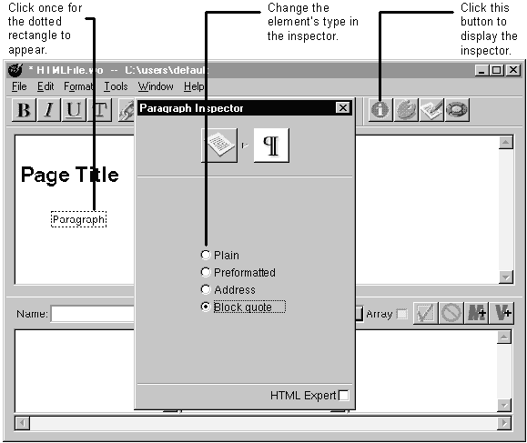

Table of Contents
Table of Contents
 Previous Section
Previous Section
Table of Contents
Previous Section
Each icon on the Static Elements palette represents a group of HTML tags. For example, the Heading icon represents all HTML headings, <H1> through <H6>. The Paragraph icon represents all paragraph styles: Preformatted text, Block quotes, Addresses, and plain paragraphs. "HTML Elements on the Static Elements Palette" lists the HTML tags you can create using the palette. If there is no palette icon for the HTML tag you want, create a custom tag.
Place the cursor where you want the element to appear on the page.
If the palette window isn't displayed, click the palette button to display it.
Drag the element from the palette window onto the page.
Select the element.
If the inspector window isn't displayed, click the inspector window to display it.
In the inspector, select the element type you want.


See "Formatting Tips" if you're having trouble editing the page.
If the element you added has an HTML-defined attribute that you want to set, see if it can be set in that element's inspector. If not, you can set it manually by clicking the HTML Expert check box in the inspector. When you click the check box, the inspector window gives you a representation of this element in HTML. You can add, delete, or change attributes. Click the HTML Expert check box again to turn off HTML Expert mode. Note: WebObjects Builder does no checking that the attribute you entered is valid HTML or has a valid value.
 Next Section
Next Section